本籍地の村から、江戸時代以前のご先祖へ。この土地に、あなたの名字の家が
どのようにあったのかを書きます

家に伝わる古い文書は、代を重ねるうちに本家へ集まります。一方、土地に残った記録は、どの家からでもたどれます。村の地誌や郷土史、古文書、古い地図を調べ、同じ名字の家がどのように記されているかを確かめたうえで、一続きの読み物にまとめてお届けします。
始めるために必要なのは、名字と、明治ごろ（1868〜1912年）の本籍地の村の二つだけです。戸籍を集めていなくても始められます。綴・一葉から始めることも、綴・見立帖から始めることもできます。
調べると分かることご先祖は、その村でいつから、どのような暮らしをしていたのか
架空の安東家（本籍地は大分県の長岩屋）の例では、本籍地から約9km離れた佐野に、天正8年（1580年）の鞍懸城の戦いを伝える書状が9通残っていました。これらの書状を伝えてきたのは、安東家と同じ名字の家です。その家は、江戸時代に庄屋を務めました。天明6年（1786年）には、安東貞五郎が学者の家に婿入りしました。文政8年（1825年）生まれの安東九華は庄屋を継ぎました。さらに九華は、明治15年（1882年）に郡長を務めています。本籍地の長岩屋は、鎌倉時代から天念寺の山として記録に残る土地でした。
記録の残り方には、村ごとに差があります。戦国時代の書状が9通残っている村もあれば、村の古い来歴について、郡誌に「徴すべきなし」と記されている村もあります。そうした村でも、郡誌の村の章、明治（1868〜1912年）以降の名簿、寺や行事の記録を組み合わせて、一冊にまとめられます。家系の記録がどの時代まで残っているかは、見立帖でご確認いただけます。
3つのサービス綴・一葉、または綴・見立帖から始められます。綴・伝承帖は、綴・見立帖をご依頼いただいた方を対象としています
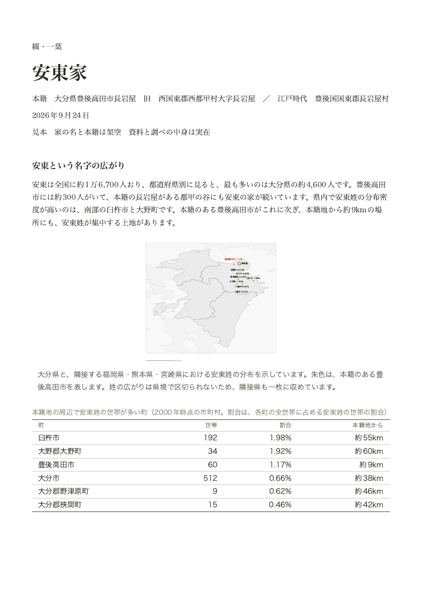
綴・一葉
A4用紙の両面に、名字がどの土地に多いか、本籍地がどのような村かをまとめます。さらに、家系についての一文も記載します。
くわしく ↓ 村を読む一冊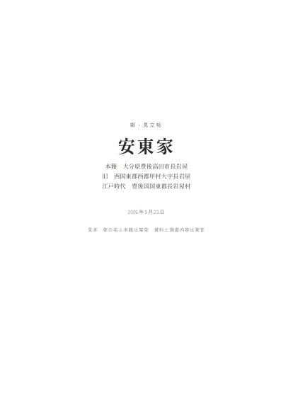
綴・見立帖
A4判で、20ページ前後の冊子です。地図と年表、菩提寺と考えられる寺院、名字が出てくる古い本や文書を収録します。家系が村でどのような役割を担っていたかも分かります。
くわしく ↓ その先の一冊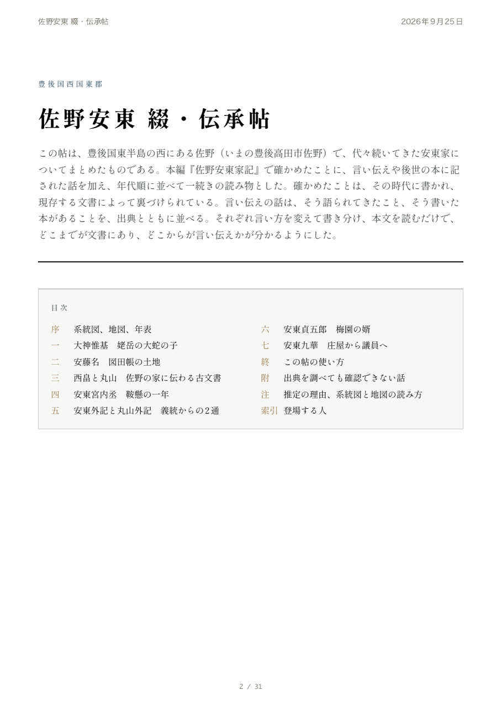
綴・伝承帖
見立帖で分かったことを年代順に並べ、一続きの物語としてまとめた一冊の読み物です。
くわしく ↓見立帖をお読みになってから、その先へ進むかをお決めいただけます。ここに載せた見本は、架空の家（安東家）のものです。
はじめの一枚綴・一葉つづり いちよう
架空の家（安東家）の一葉を、PDFでお読みいただけます。A4判の両面印刷です。
PDFで全編を読むA4用紙の両面に、名字と本籍地の村について、次の6項目をまとめます
- 名字の人数全国に何人いて、最も多いのはどの県か、本籍地の市町村には何人いるかまで示します
- 名字の多い町本籍地の周辺で名字の多い町を、本籍地からの距離とともに並べます
- 名字の分布図県をまたいで、どの土地に名字が多いかを、町名と割合とともに地図上で確認できます
- 本籍地の村の成り立ち中世の荘園から江戸時代の領主、明治（1868〜1912年）の町村制を経て、現在の地名までが分かります
- 村の寺と、現在まで続く行事寺の名前と宗派、村に残っている行事を紹介します
- 家系についての一文ここまでの5項目をもとに、村でどのような家だったのかを一文にまとめます
綴・一葉をご覧になってから、綴・見立帖へお進みいただけます。
500円（税込）。講座や店頭では、その場でお渡しします。ご自宅へはPDFでお送りし、通常は1日ほどで届きます。
綴・一葉の表と裏（見本）
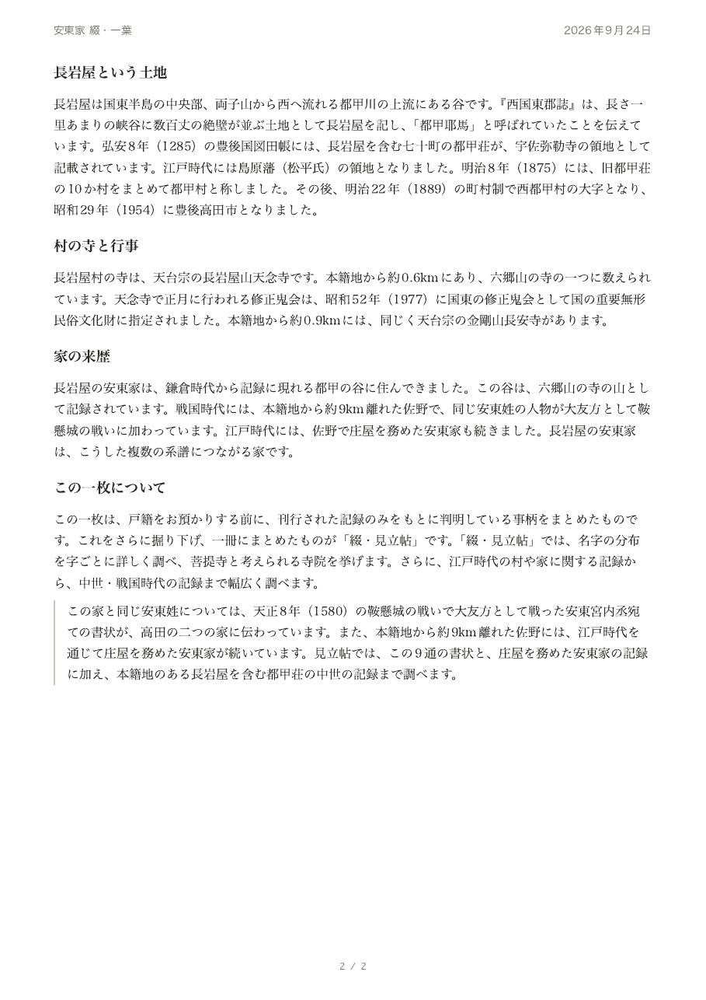
図を押すと拡大表示され、説明をお読みいただけます。ここに掲載しているのは、架空の家（安東家）の見本です。
村を読む一冊綴・見立帖つづり みたてちょう 本籍地の村と家系のことが、一冊で分かります
名字と本籍地の村を手がかりに、村の地誌や郷土史、古文書、古い地図を調べます。記録から、ご先祖が村でどのように暮らしてきたかを読み取り、地図と年表を含む20ページほどの冊子にまとめます。たどれる時代は家ごとに異なりますが、この一冊で、家系の記録がどの時代まで残っているかが分かります。そのうえで、先へ進むかをお決めいただけます。
架空の家（安東家）の見立帖を、表紙からまとめまでPDFでお読みいただけます。A4判の冊子です。
PDFで全編を読む綴・見立帖
つづり みたてちょうA4判で、20ページ前後の冊子です。地図と年表も冊子に収録します
- 名字がどこに多いか全国、県、町、字（あざ）の4つの地図で、順に確認できます
- 本籍地の村の成り立ち村の戸数と産物、領主、神社と寺から、現在の地名までが載ります
- 菩提寺と考えられる寺院宗派と本籍地からの距離を添えて、3つほど紹介します
- 名字が出てくる古い本や文書本の名前と年代、どこで読めるかが分かります
- 村での家の役目と暮らし向き集まった記録から、その家が村でどのような役割を担っていたのかが分かります
30,000円（税込）。PDFでお届けし、まとめの頁はA4用紙に印刷して郵送します。印刷製本版は＋8,000円です。納期の目安は1か月です。
綴・見立帖を申し込む一冊の中身（章の並び）
- 名字がどこに多いか全国、県、町、字の4つの地図で、順にたどれます
- 本籍地のまわりにある同じ名字の家どの土地に何軒あるかが、本籍地からの距離とともに示します
- 近代の名簿に出る名字明治（1868〜1912年）から昭和（1926〜1989年）にかけての名簿に記された、同じ名字の人物の名前が読めます
- 本籍地の村の成り立ち村の戸数と産物、領主、神社と寺、現在のどの地名にあたるかが分かります
- 土地の由来と、語られてきた話地名の起こりと、その土地に伝わる話を、載っている本の名前とともにお読みいただけます
- 菩提寺と考えられる寺院本籍地に近い順に3つほど、宗派と距離を添えて掲載します
- 江戸時代の村と家系検地帳や村の証文、藩の帳面に、名字がどう出てくるかが分かります
- 中世・戦国時代の記録と家の起こり名字の起こりと伝えられる土地や、その時代の記録に見える同じ名字の家を、本籍地からの距離とともに掲載します
- まとめここまでの章をもとに、村でどのような家だったのかが分かります
- 調べた記録の一覧名字が出たかどうかにかかわらず、調べたすべての記録を、本の名前と所蔵先とともに一覧にします
- 別紙「今後のご案内」戸籍で分かること、今後のサービスと費用、さらに掘り下げるときの手がかりを、見立帖とは別にお渡しします
章の厚さは、その土地に残っている記録の量で変わります。江戸時代と明治以降の章が厚くなる家が多く、中世の記録が見つかった家では、中世の章も厚くなります。
名字を手がかりに調べる、4つの記録
冊子に収録されている図とページ（見本のうち6枚）
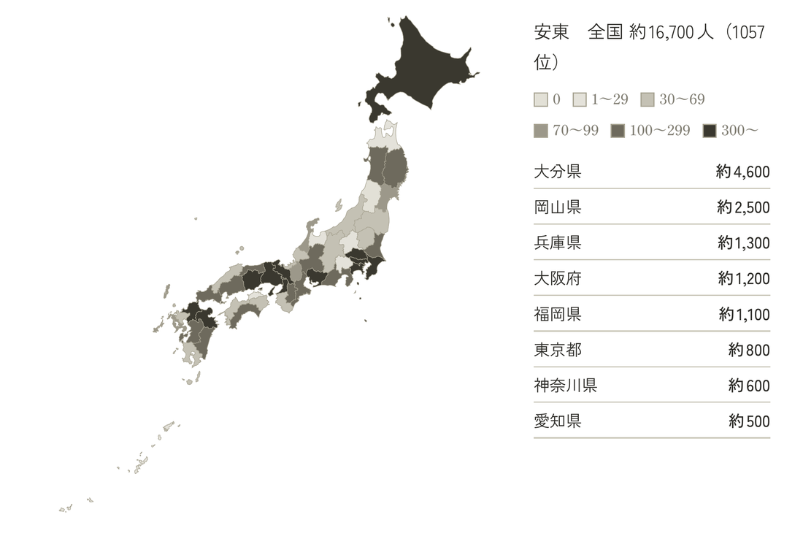
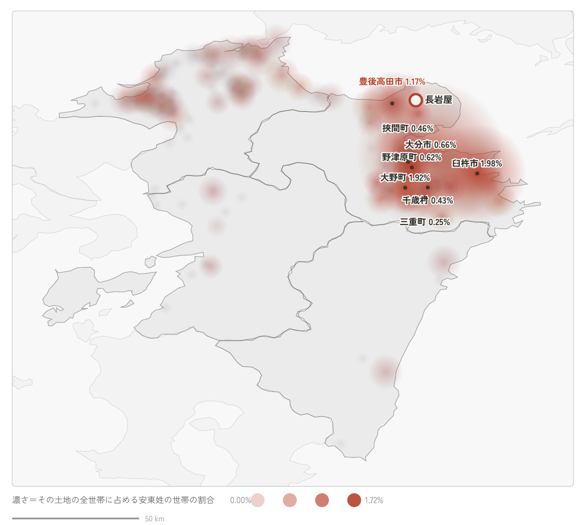
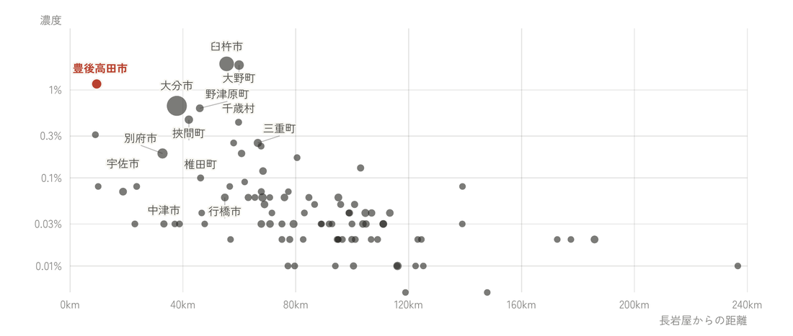
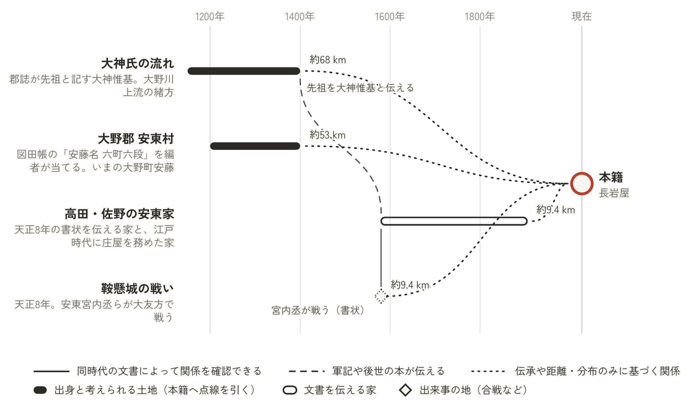
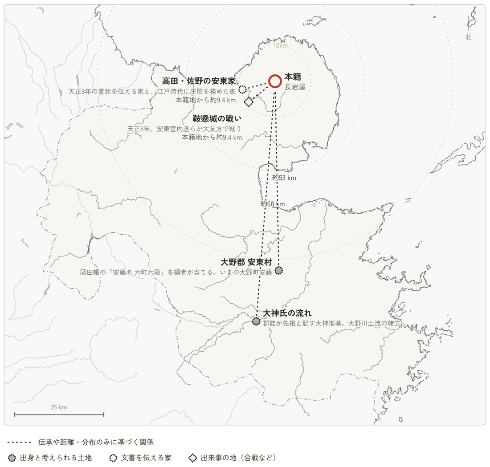
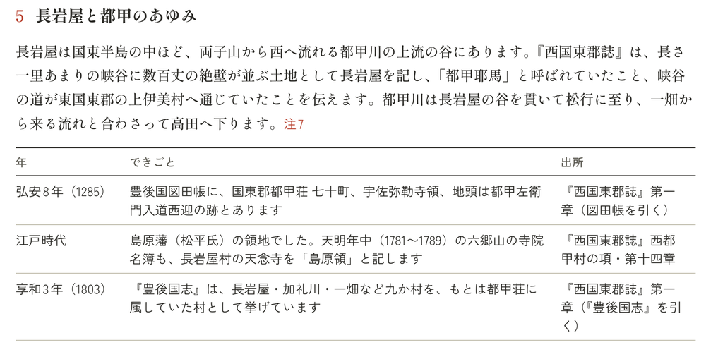
図を押すと拡大表示され、説明をお読みいただけます。ここに掲載しているのは、架空の家（安東家）の見本です。
その先の一冊綴・伝承帖つづり でんしょうちょう 家のあゆみが、一冊の読み物になります
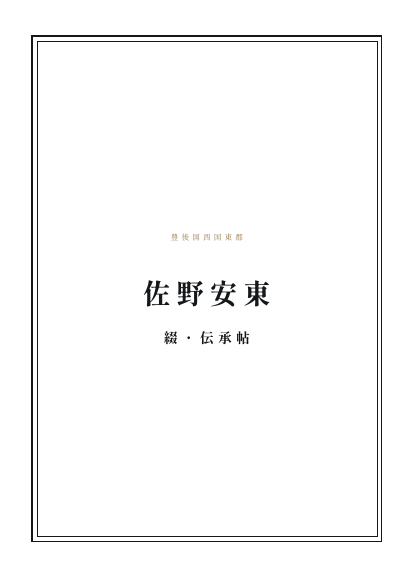
架空の家（安東家）の伝承帖を、表紙から終章までPDFでお読みいただけます。A4判の冊子です。
PDFで全編を読む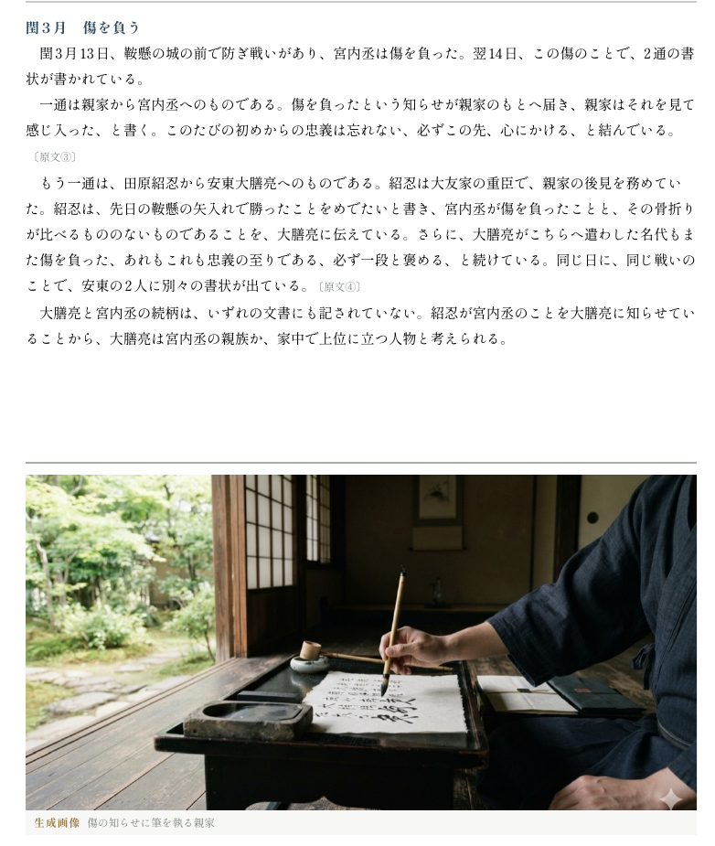
見立帖で分かったことを年代順に並べた、一冊の読み物です
- 古い記録で確かめられたこと原文と現代語訳を並べて読めます
- 土地に語られてきた話軍記や地誌、言い伝えを、どの本にあるかとともに読めます
- 場面の絵と、名前のつながりを示す図が入ります
- ご家族からの聞き書きも、一つの章にできます
どこまでが古い記録で、どこからが言い伝えなのかが、読んでいて自然に分かります。
98,000円（税込）。綴・見立帖をご依頼いただいた方が対象です。厚さは、見つかった記録の量によって変わります。印刷製本版（箱付き）は＋8,000円、上製本は＋30,000円です。納期の目安は2か月です。
冊子に収録されているもの（見本のうち5枚）

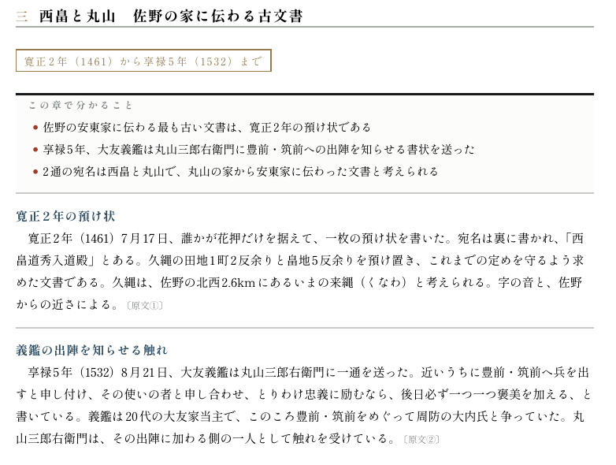
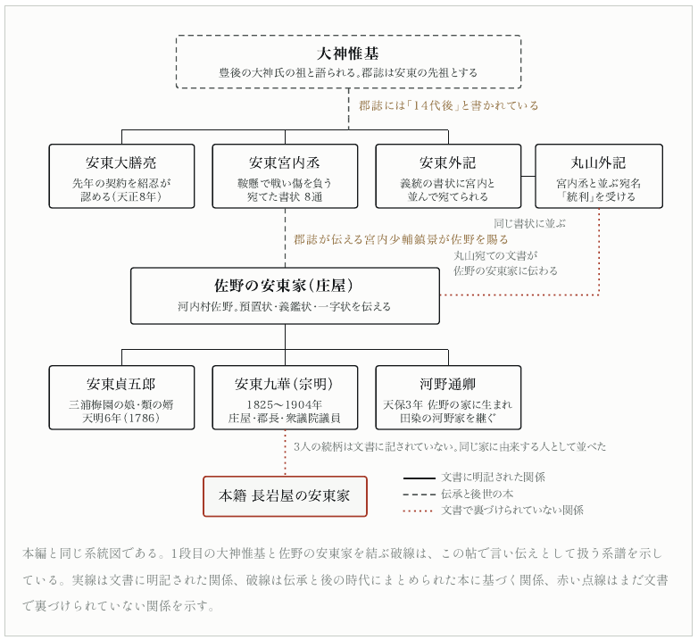
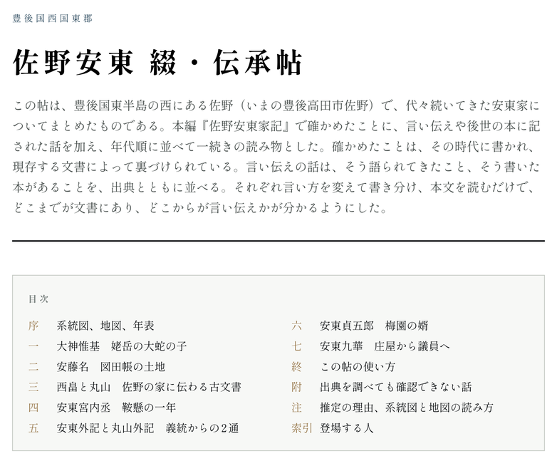
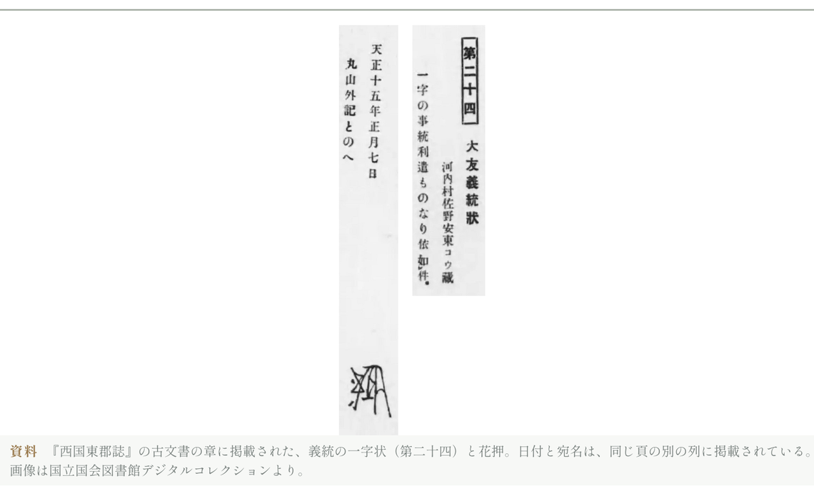
図を押すと拡大表示され、説明をお読みいただけます。ここに掲載しているのは、架空の家（安東家）の見本です。絵には生成画像を使用しています。古文書の写しは、国立国会図書館デジタルコレクションで公開されているパブリックドメインの画像です。
制作の方針3つのお約束
お申し込み始め方
- 名字と、明治ごろ（1868〜1912年）の本籍地の村をお知らせください大字まで分かれば、それで十分です。
- 綴・一葉が、お手元に届きます名字がどの土地に多いかと、本籍地がどのような村かが、A4用紙の両面で分かります。
- 一枚をご覧になってから、先へ進むかをお考えいただけますお進みになるなら、次は綴・見立帖です。
- 綴・見立帖の結果に応じて、次のサービスをご案内します見立帖で、本籍地の近くにある、名字が記された江戸時代以前の記録や言い伝えが見つかった場合は、綴・伝承帖をご案内いたします。
お申し込み
名字と、明治ごろ（1868〜1912年）の本籍地の村（大字まで）をご記入ください。この2つから始められます。
開業にあたり、最初の5件に限り、綴・見立帖を25,000円（税込）でお受けします。お読みになった感想の、この頁への掲載に同意いただける方が対象です。掲載するのは感想と都道府県名だけで、調べた内容は載せません。
綴・見立帖を申し込む（30,000円） 綴・一葉を申し込む（500円）お支払い方法は、クレジットカード（Stripe）または銀行振込です。作業に着手する前に、全額をお支払いいただきます。取消しの扱いは、ご利用規約の第4条「お支払いとお取消し」のとおりです。
お電話・メールでも承ります。
電話 047-384-8828（平日 9:00〜17:00）
メール tsuzuri.kakei@gmail.com
追加でお選びいただけるサービス
相続などで集めた除籍謄本がお手元にある方に向けたサービスです。除籍謄本を1枚ずつ確認し、A3判の厚紙にまとめた系図、人物台帳、家のあゆみ、生没の記録（誰がいつ生まれ、いつ亡くなったかの一覧）を作成します。原本は順にとじて、箱に入れてお返しします。
100,000円（税込）。除籍謄本6綴りまで。7綴り目以降は、1綴りにつき5,000円を加算します。原本は到着から2週間でお返しし、できあがりまでは2か月が目安です。
ご参考よくあるお尋ね
戸籍を集めていなくても頼めますか
はい。綴・一葉と綴・見立帖は、名字と、明治ごろ（1868〜1912年）の本籍地の村だけで始められます。この2つがあれば、それで十分です。
どこまでさかのぼれますか
家によって、たどれる時代は変わります。同じ村でも、戦国時代の書状まで残っている家もあれば、江戸時代の検地帳から分かる家もあります。綴・見立帖で、家系の記録がどの時代まで残っているかをご覧になってから、先へ進むかをお決めいただけます。調べた記録は、名字が出たかどうかにかかわらず、すべて本の名前と所蔵先とともにお手元に残ります。
戸籍の請求を代わりにしてもらえますか
戸籍（除籍謄本など）の請求手続きと、請求書への署名は、ご本人にお願いしています。戸籍を請求できる方が、ご本人、配偶者、直系尊属、直系卑属に限られているためです。どの役場へ、誰の、どの範囲を請求するかの案内と、書き方の見本をお渡しします。欄はご本人がお書きください。
ほかで作成した家系図がある場合も依頼できますか
はい。お手元の家系図や戸籍があれば、綴・見立帖に活かします。戸籍でたどれるのは、江戸時代の終わりごろまでです。綴・見立帖では、名字と本籍地の村を手がかりに、江戸時代以前の記録を調べます。
できあがったものは、どのような形で届きますか
PDFでお送りします。綴・見立帖は、まとめの頁をA4用紙に印刷して郵送でもお届けします。メールを受け取れる環境と、PDFを開ける機器（パソコン・スマートフォン・タブレット）をご用意ください。印刷製本版をご希望のときは、郵送でお届けします。
お預かりした原本は、どうなりますか
撮影が済み次第、書留でお返しします。お預かりした日に「預かり証」をお渡しします。撮影した画像は、お渡しから1年後に削除します。